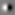
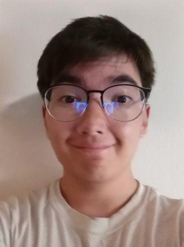

CS 180 Project 2: Fun with Filters and Frequencies!
In this project, we use convolutional filters and their relationship with the image frequency domain to perform a variety of interesting image processing applications, including image blurring, edge detection, image sharpening, hybrid images, and image blending.
Part 1.1: Convolutions from Scratch!
Implementation
In this part, we implement convolution from scratch using only numpy array operations. Below is one implementation, using a total of four for loops:
def four_for_convolve(image, kernel):
kernel = kernel[::-1, ::-1]
pad_amount = max(len(kernel), len(kernel[0]))//2
image_height, image_width = image.shape
new_image = np.zeros(image.shape)
padded_image = np.pad(image, pad_amount)
for kernel_x in range(image_width):
for kernel_y in range(image_height):
convolved_result = 0
for place_x in range(len(kernel[0])):
for place_y in range(len(kernel)):
convolved_result += padded_image[kernel_y + place_y + (pad_amount - len(kernel)//2), kernel_x + place_x + (pad_amount - len(kernel[0])//2)] * kernel[place_y, place_x]
new_image[kernel_y, kernel_x] = convolved_result
return new_image
This implementation is much slower than scipy's base convolution implementation, scipy.signal.convolve2d, taking anywhere from 200 to 500 times as long to compute (across a sampling of randomly-sized images and kernels). Instead of using four for loops to manually convolve entry-by-entry, we can also use just 2 for loops to slide our kernel across the image while array operations provide us with the functionality to actually perform batched kernel operations. The result of this method is as follows:
This implementation takes roughly 20 to 60 times as long as the scipy.signal.convolve2d implementation, which is a significant improvement over the version with four for loops. Here it is important to note that the padding implmentation of these methods matches the boundary behavior of the "same" mode in scipy.signal.convolve2d, which results in an image equal in size to the original. That said, padding with zeros does mean the boundaries in all such images end up being darker than the source image would realistically imply.
Application
With our convolution implemented, we can try using it to filter a selfie!
def selfie_convolve(filter, output_name, convolution_method):
imname = 'images/jaimyn_selfie.jpg'
# Read in the image
im = skio.imread(imname)
# Convert to double
im = sk.img_as_float(im)
# Apply convolution for each color channel
results = []
for channel in range(3):
channel_image = im[:,:, channel]
results.append(convolution_method(channel_image, filter))
# If the minimum is less than zero, we make it the new zero value
if np.min(im_out) < 0:
im_out = (im_out - np.min(im_out) * np.ones(im_out.shape))/(np.max(im_out) - np.min(im_out))
# Recombine the images and display
im_out = np.stack(results, axis=2)
skio.imshow(im_out)
skio.show()
One filter we can test out is a 9x9 box filter:
box_filter = 1/81*np.ones((9,9))
Applying this filter to a selfie leads to the following result:
Other derivative filters include the following:
Dx = np.array([[1, 0, -1]])
Dy = np.array([[1], [0], [-1]])
Applying these filters to the selfie result in the following two images:
Part 1.2: Finite Difference Operator
In this part, we use the finite difference operators Dx and Dy to detect the edges in an image of a cameraman. Here are the results using the Dx filter (left) and Dy filter (right) respectively:
Using these two partial derivatives, we can create a unified gradient magnitude image, which appears as follows:
If we choose to binarize the image at a fixed threshold, we can achieve a measure of the edges in the image. In this case, I selected a threshold of 30% such that the outline of the cameraman and camera are preserved while noise like the grass in the scene is ignored. This does come at the cost of the buildings in the background, however, because they do not differ much in intensity from the sky in the background.
Part 1.3: Derivative of Gaussian (DoG) Filter
While the finite difference operator does lead to pretty decent edge images, we notice that some of the edges are not very smooth and contain multiple discontinuities. In order to mitigate this issue, we can convolve the image with a Gaussian filter to smooth it before applying our derivative filters, which results in the following images (Dx left, Dy right):
As we can see, these edges are much smoother and more continuous than the ones we produced without Gaussian filtering, although they are overall dimmer. In order to increase computational efficiency, we can implement the same effect by creating Derivative of Gaussian (DoG) filters for the x (left) and y (right) axes respectively:

If we apply these filters to the original cameraman image, we achieve the following results, which directly match the outputs of Dx and Dy on the blurred image!
Part 2.1: Image "Sharpening"
In the previous section, we learned about the Gaussian filter, a convolutional filter that smoothens an image. In the frequency domain, this acts as a low-pass filter, causing only low-frequency (smooth) components to be preserved. As an example, we can observe the effects of a Gaussian filter on the following images of the Taj Mahal and Red-Eyes Darkness Metal Dragon (original images are provided on the left for comparison):
If we would like to achieve the opposite effect, images that appear sharper than the original, then we can simply apply a Laplacian (impulse minus Gaussian) filter to our images instead. In effect, this subtracts away the components of our image that are lower in frequency, leaving us with only the high-frequency edges. This behavior leads many to describe this as a high-pass filter, one that preserves the high-frequency components in an image, although the analogy is incomplete from a signal processing perspective. The resulting images from our Laplacian filter are as follows:
By simply adding multiples of these edge images to the original image, we can produce images that appear more crisp and clear than the original (middle images, original images on left for comparison). This occurs because we are effectively emphasizing more of the high-frequency details. If we magnify the edge images too much, however, our image can end up noisy and oversaturated (right images). Thus, a balanced approach is important to producing quality images!
Part 2.2: Hybrid Images
Sharpening images isn't the only thing we can do using frequency filters. In this part, we can create a "hybrid image" by combining the high frequency components of one image with the low frequency components of another. As a result, one of the images will become prominent when viewed from up close, but the other will become prominent when viewed from afar. To begin, we must align our images so that their relevant features are lined up. We transform our original images (top) to their aligned versions (bottom).
Now that our images are aligned, we want to filter them to preserve the low-frequency and high-frequency components respectively. For the low-pass filter we apply to Derek, we use a 41 x 41 Gaussian filter with corresponding standard deviation 6.67. For the high-pass filter we apply to Nutmeg, we use a 121 x 121 Laplacian filter with corresponding standard deviation 20. Note that the selection of filter size and standard deviation affects their corresponding cutoff frequency, with lower sizes corresponding to higher cutoff frequencies and higher sizes corresponding to lower cutoff frequencies. In this case, our low-pass filter with a higher cutoff and high-pass filter with a lower cutoff means that there is a range of frequencies shared between both filters. This range allows the two images to blend more readily, rather than simply superimposing on top of one another. Filtered versions of our images and their corresponding frequency plots are as follows:
In this case, Derek's frequency plot perfectly exhibits the behavior of a low-pass filter, while Nutmeg's plot only roughly exhibits the qualities of a high-pass (containing more values at higher frequencies). This is because while the spatial domain Gaussian filter corresponds to a true low-pass filter, the spatial domain Laplacian filter (produced by just subtracting a Gaussian from an impulse) is not a true high-pass filter. We observe that Nutmeg's filtered image still contains flat sections, which is why the frequency plot still contains low frequencies.
Thus, the hybrid between Derek and Nutmeg is born:
Besides that, here are the results of our hybrid image method on a couple more image pairs:
Parts 2.3 & 2.4: Gaussian and Laplacian Stacks & Multiresolution Blending (a.k.a. the oraple!)
In this section, we create Gaussian and Laplacian image stacks, which involve the successive filtering of an image with Gaussian filters. These structures exhibit frequency domain characteristics that make them ideal for the application of image blending. To begin, we can observe the Laplacian stacks associated with an apple (top) and an orange (bottom):
With our Laplacian stacks developed, we can now combine the frequency-domain images of the apple and the orange! Here is a figure demonstrating the process:
As we can see in the figure, half of the Laplacian stack representations of each fruit are derived via masking (the masks derive from a Gaussian stack) and then connected together to create the representation of the combined fruit in that frequency regime. By recombining the resulting Laplacian stack, we are able to blend the images together. For another example of image blending, here's a selfie with a friend:

While these blends both involved linear boundaries, we can also blend non-linear boundaries. By creating a binary mask image to put into our Gaussian stack, instead of just a procedurally-generated rectangle, we can use this technique to put an eye on the moon: